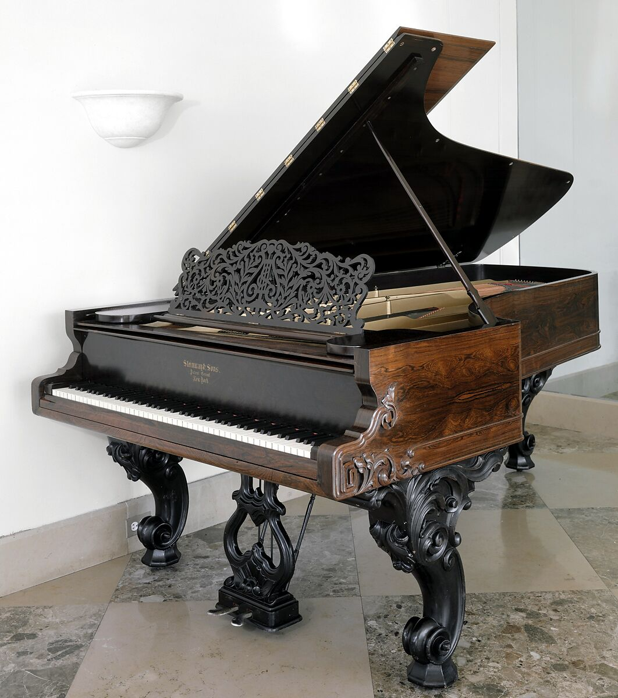

第6章｜なぜピアノの鍵盤は88個なのか？
この章の目次
白鍵52個、黒鍵36個。見慣れた鍵盤に隠された、意外な歴史と小さな謎。
ピアノといえば、白と黒の鍵盤。
子どもの頃から見慣れた姿ですが、よく考えてみると不思議なことがたくさんあります。
なぜ鍵盤は88個なのでしょうか。
なぜ黒鍵は2個と3個のまとまりになっているのでしょうか。
そして、「中央のド」は、本当にピアノの真ん中にあるのでしょうか。
今回は、ピアノを実際に眺めながら楽しめる、身近な疑問を集めました。
6-1. なぜ88鍵？ 100鍵ではだめなのか？
| 一般的なピアノの鍵盤数 | 個数 |
|---|---|
| 合計 | 88 |
| 白鍵 | 52 |
| 黒鍵 | 36 |
実は、ピアノの鍵盤が最初から88個だったわけではありません。
第1章で紹介したクリストフォリの1720年製ピアノは54鍵。モーツァルトの時代には61鍵程度の楽器が使われていました。
その後、ベートーヴェンやショパン、リストの時代を経て、作曲家たちが求める音域は次第に広がっていきます。
メトロポリタン美術館には、1868年製の88鍵のスタインウェイが残っています。つまり、19世紀後半にはすでに88鍵のピアノがあったのです。ヤマハの解説では、現在につながる音域は1890年代ごろに確立し、20世紀には一般的な標準として普及しました。
では、なぜ88個で落ち着いたのでしょうか。
理由の一つは、これ以上音域を広げても、一般的なピアノ音楽では使う機会が少ないことです。
標準的な88鍵ピアノは、最低音がラ（A0）、最高音がド（C8）です。A4＝440Hzの12平均律で計算すると、約27.5Hzから約4,186Hzになります。
演奏に求められる音域が広がる一方、極端な低音や高音では弦の設計や音高の聞き取りにも難しさが増します。演奏上の需要と製作上の条件が重なり、この音域が実用上の標準として定着していきました。
実際に88鍵を超えるピアノも存在します。

写真 The Metropolitan Museum of Art（Open Access・CC0）。 写真の出典
6-2. 実は、108鍵のピアノもある！
オーストラリアのピアノメーカー、Stuart & Sons（スチュアート・アンド・サンズ）は、なんと108鍵のアコースティックピアノを作りました。
同社初の108鍵モデル「Beleura」は2018年9月に完成しました。音域は最低音C0から最高音B8まで。両端を含めて108鍵で、同社はこのモデルを「9オクターブ」と呼んでいます。
通常の88鍵ピアノより、低音にも高音にも音域が広がっています。
また、第5章で紹介したベーゼンドルファーには、97鍵と92鍵のモデルがあります。
| ピアノ・モデル | 鍵盤数 |
|---|---|
| 一般的なピアノ | 88 |
| ベーゼンドルファー 225 | 92 |
| ベーゼンドルファー 290 Imperial | 97 |
| Stuart & Sons Beleura | 108 |
つまり「ピアノは88鍵」と覚えるのは正しいのですが、厳密には「一般的なピアノは88鍵」と言うべきなのです。
- 88鍵｜一般的なピアノ
- A0〜C8
- 92鍵｜ベーゼンドルファー225
- F0〜C8
- 97鍵｜ベーゼンドルファー290 Imperial
- C0〜C8
- 108鍵｜Stuart & Sons Beleura
- C0〜B8
図版 Kussoon制作。 図解の参考資料
6-3. なぜ黒鍵は2個と3個の並びなのか？
ここからは、実際に鍵盤を見ると分かりやすい話です。
1オクターブ分をドからシまで見ると、白鍵が7つ、黒鍵が5つ。次のドから同じ配置が繰り返されます。
ピアノの白鍵は、ド・レ・ミ・ファ・ソ・ラ・シの7音が繰り返されます。
一方、隣り合う白鍵の間には、黒鍵がある場所とない場所があります。
なぜでしょうか。
それは、ミとファ、シとドの間が、もともと半音だからです。
一般的な12半音の鍵盤では、ミとファの間、シとドの間にもう一つ別の鍵盤を挟む必要がありません。
そのため、ドとレ、レとミの間には黒鍵があり、ファ・ソ・ラ・シの間にも黒鍵があるのに、ミとファ、シとドの間には黒鍵がないのです。
こうして、黒鍵は自然に2個と3個のまとまりになります。
これは飾りではなく、西洋音楽の音階を鍵盤に配置した結果なのです。
6-4. 黒鍵は、必ずシャープの音なのか？
いいえ。ここは少しだけ音楽理論のお話です。
例えば、ドとレの間の黒鍵には、二つの呼び方があります。
**ド♯（ドのシャープ）とレ♭（レのフラット）**です。
現代の一般的なピアノの12平均律では、これらは同じ鍵盤で演奏します。
しかし、音楽理論や楽譜上の役割は同じとは限りません。
例えば、ある調ではド♯と書く方が自然でも、別の調ではレ♭と書く方が適切になります。
つまり、黒鍵には「シャープ専用」「フラット専用」という区別はありません。
また、ミ♯はファの白鍵、ド♭はシの白鍵に相当する場合があります。
シャープやフラットだから必ず黒鍵になる、というわけではないのです。
この話を理解すると、楽譜に書かれた音名と、実際の鍵盤との関係が少し面白くなります。
6-5. 「中央のド」は、本当に真ん中にある？
ピアノを習い始めると、よく登場する「中央のド」。
英語では Middle C と呼ばれます。
ところが、88鍵のピアノの中央のドは、厳密には鍵盤全体の真ん中ではありません。
標準的な88鍵を半音ずつ数えると、中央のド（C4）は、左から40番目の鍵盤です。鍵数で数えた中央は44番目と45番目の間ですから、中央のドはそこより少し左にあります。
なぜ中央のドと呼ぶのでしょうか。
中央のドは、ト音記号とヘ音記号を組み合わせた大譜表の中央付近に、短い加線を使って書ける基準的な音です。
鍵盤全体の正確な中央にあるから、というわけではありません。
ちなみに、88鍵のピアノには「ド」が8個あります。
低音側から数えて4番目のドが、中央のドです。
6-6. モーツァルト時代には、白と黒が逆のピアノもあった！
現在のピアノは白鍵が長く、黒鍵が短く突き出した形をしています。
では、18世紀のピアノはどうだったのでしょうか。
当時のピアノには、現在と逆の配色が広く見られました。現在の白鍵に相当する長い鍵（ナチュラル鍵）が黒系で、黒鍵に相当する短い半音鍵が白系です。一部のオルガンやチェンバロにも同じ配色が見られます。
一方、18世紀のカークマン製チェンバロには、白いナチュラル鍵を備えた実物も残っています。時代や地域、製作者によって配色はさまざまです。ピアノでは、19世紀に普及する過程で白いナチュラル鍵の配色が一般的になっていきました。
それでは、なぜ色が変わったのでしょうか。
実は、はっきりした理由は分かっていません。
ヤマハの解説では、白い鍵盤の方が明るく見えることや、黒い半音鍵が奥まって見えることで視覚的な安定感が生まれることなどが、説として紹介されています。
昔のピアノを実際に見てみたい方には、東京の民音音楽博物館が所蔵する1795年製のアントン・ヴァルターのピアノも興味深い資料です。同館は製作者名を「アントン・ワルター」と表記しています。
- 現代の一般的な配色
- 18世紀の配色例
図版 Kussoon制作。 図解の参考資料
6-7. 白鍵は象牙、黒鍵は黒檀だった？
かつてのピアノでは、白鍵の表面に象牙、黒鍵に黒檀などが使われていました。
ただし、鍵盤全体が象牙や黒檀の塊だったわけではありません。
一般的なアコースティックピアノの鍵盤の本体には、木材が使われています。
鍵盤の表面に、指が触れるための材料を貼り付ける構造です。
現在の白鍵の表面には、人工象牙やアクリルなどの素材が使われる例があります。
ヤマハによると、鍵盤本体にはエゾ松やスプルースなどの木材が用いられています。
現代のピアノ製作では、手触りだけでなく、耐久性、湿度への強さ、材料の安定供給なども重要です。
白鍵が白いから象牙製、黒鍵が黒いから黒檀製、というわけではないのです。
6-8. ピアノの日は、なぜ3月末なのか？
最後は、ちょっとした雑学です。
世界には「Piano Day（ピアノの日）」という音楽イベントがあります。
その日は、1年の88日目。
ピアノの鍵盤数88にちなんだ日です。
平年なら3月29日、うるう年なら3月28日になります。
88という数字が、ピアノという楽器の象徴になっているわけですね。
このように、普段は気にしていない鍵盤の数や色にも、長い歴史が隠されています。